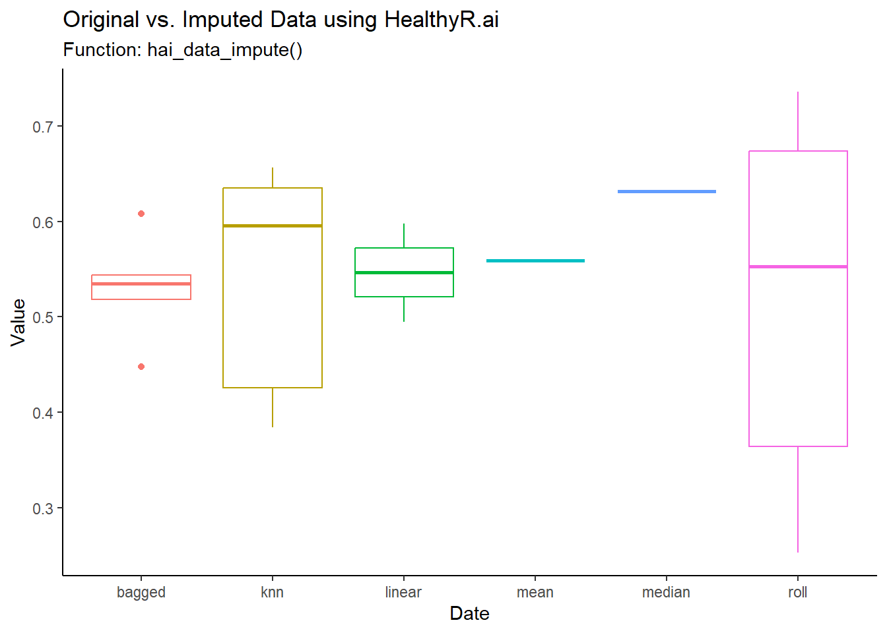

library(healthyR.ai)
library(recipes)
library(dplyr)
library(ggplot2)
library(purrr)
n <- 10L
l <- 5L
lo <- n * l
date_seq <- seq.Date(from = as.Date("2013-01-01"), length.out = lo, by = "month")
date_seq [1] "2013-01-01" "2013-02-01" "2013-03-01" "2013-04-01" "2013-05-01"
[6] "2013-06-01" "2013-07-01" "2013-08-01" "2013-09-01" "2013-10-01"
[11] "2013-11-01" "2013-12-01" "2014-01-01" "2014-02-01" "2014-03-01"
[16] "2014-04-01" "2014-05-01" "2014-06-01" "2014-07-01" "2014-08-01"
[21] "2014-09-01" "2014-10-01" "2014-11-01" "2014-12-01" "2015-01-01"
[26] "2015-02-01" "2015-03-01" "2015-04-01" "2015-05-01" "2015-06-01"
[31] "2015-07-01" "2015-08-01" "2015-09-01" "2015-10-01" "2015-11-01"
[36] "2015-12-01" "2016-01-01" "2016-02-01" "2016-03-01" "2016-04-01"
[41] "2016-05-01" "2016-06-01" "2016-07-01" "2016-08-01" "2016-09-01"
[46] "2016-10-01" "2016-11-01" "2016-12-01" "2017-01-01" "2017-02-01"val_seq <- replicate(n = l, c(runif(9), NA)) |> as.vector() |> as.double()
val_seq [1] 0.74815520 0.62345014 0.98719405 0.98357823 0.64343460 0.38288945
[7] 0.30782868 0.63132596 0.09734484 NA 0.79572696 0.08743225
[13] 0.72841099 0.78703884 0.39553790 0.54639674 0.96807028 0.60125354
[19] 0.74665373 NA 0.92237646 0.04457192 0.68444841 0.05388607
[25] 0.24374963 0.73552094 0.84926348 0.55056715 0.77699405 NA
[31] 0.55460139 0.24564446 0.24396533 0.60797386 0.71226179 0.93048958
[37] 0.72179306 0.01549613 0.88487496 NA 0.41888816 0.08623630
[43] 0.06213051 0.58266383 0.72425739 0.17659346 0.80285097 0.78684451
[49] 0.68433082 NAdata_tbl <- tibble(
date_col = date_seq,
value = val_seq
)
rec_obj <- recipe(value ~ date_col, data = data_tbl)
rec_obj
df_tbl <- tibble(
impute_type = c("bagged","knn","linear","mean","median","roll"),
rec_obj = list(rec_obj),
data = list(data_tbl)
)
df_tbl[1,][[3]][[1]]# A tibble: 50 × 2
date_col value
<date> <dbl>
1 2013-01-01 0.748
2 2013-02-01 0.623
3 2013-03-01 0.987
4 2013-04-01 0.984
5 2013-05-01 0.643
6 2013-06-01 0.383
7 2013-07-01 0.308
8 2013-08-01 0.631
9 2013-09-01 0.0973
10 2013-10-01 NA
# ℹ 40 more rowsdata_list <- df_tbl |>
group_split(impute_type)
data_impute_list <- data_list |>
imap(
.f = function(obj, id){
imp_type = obj |> pull(impute_type)
rec_obj = obj |> pull(rec_obj) |> pluck(1)
data = obj[["data"]][[1]]
imp_obj <- hai_data_impute(
.recipe_object = rec_obj,
value,
.type_of_imputation = imp_type,
.roll_statistic = median
)$impute_rec_obj
imputed_data <- get_juiced_data(imp_obj)
combined_tbl <- data |>
left_join(imputed_data, by = "date_col") |>
setNames(c("date_col", "original_value", "imputed_value")) |>
mutate(rec_no = row_number()) |>
mutate(color_col = original_value,
size_col = original_value) |>
mutate(impute_type = imp_type)
return(combined_tbl)
}
)
combined_tbl <- data_impute_list |>
list_rbind()
imped_na_vals_tbl <- combined_tbl |>
filter(is.na(original_value)) |>
summarize(
avg_imputed_val = mean(imputed_value),
.by = impute_type
)
combined_tbl |>
summarize(
avg_imputed_val_col = mean(imputed_value),
avg_original_val_col = mean(original_value, na.rm = TRUE),
.by = impute_type
) |>
mutate(imputation_diff = avg_imputed_val_col - avg_original_val_col) |>
left_join(imped_na_vals_tbl, by = "impute_type")# A tibble: 6 × 5
impute_type avg_imputed_val_col avg_original_val_col imputation_diff
<chr> <dbl> <dbl> <dbl>
1 bagged 0.556 0.559 -0.00287
2 knn 0.557 0.559 -0.00199
3 linear 0.558 0.559 -0.00128
4 mean 0.559 0.559 0
5 median 0.566 0.559 0.00721
6 roll 0.555 0.559 -0.00434
# ℹ 1 more variable: avg_imputed_val <dbl>ggplot(data = combined_tbl,
aes(
x = date_col,
y = imputed_value,
color = color_col
)
) +
facet_wrap(~ impute_type) +
geom_point(data = combined_tbl |> filter(is.na(original_value)), aes(shape = 'NA', size = 3)) +
scale_shape_manual(values = c('NA' = 3)) +
geom_line(aes(x = date_col, y = original_value), color = "black") +
geom_line(aes(x = date_col, y = imputed_value), color = "red", linetype = "dashed", alpha = .328) +
geom_vline(
data = combined_tbl[combined_tbl$original_value |> is.na(), ],
aes(xintercept = date_col), color = "black", linetype = "dashed"
) +
labs(
x = "Date",
y = "Value",
title = "Original vs. Imputed Data using HealthyR.ai",
subtitle = "Function: hai_data_impute()",
caption = "Red line is the imputed data, blue line is the original data"
) +
theme_classic() +
theme(legend.position = "none")combined_tbl |>
filter(is.na(original_value)) |>
ggplot(aes(x = impute_type, y = imputed_value, color = impute_type, group = impute_type)) +
geom_boxplot() +
labs(
x = "Date",
y = "Value",
title = "Original vs. Imputed Data using HealthyR.ai",
subtitle = "Function: hai_data_impute()"
) +
theme_classic() +
theme(legend.position = "none")